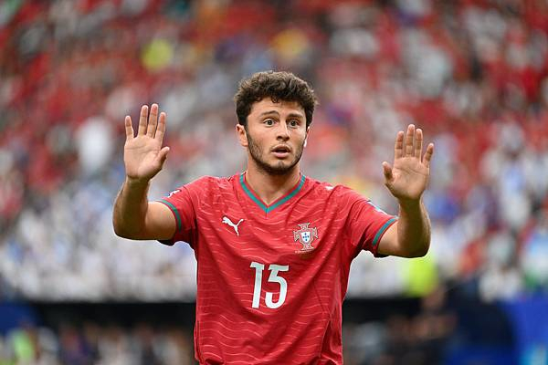

'Charity Show' Controversy — Donate, Pose, Post
Donate-pose-post package: Ronaldo's charitable acts are often accompanied by precise parallel media rollout — donation, visit, photo, press release, all in one seamless flow. From auctioning a Ballon d'Or to raise €600,000 for Make-A-Wish, to donating his €600,000 Champions League final bonus, every good deed is conveniently caught on camera.
'Performative' critique: Critics argue that true charity should be silent and invisible, while Ronaldo's philanthropy always carries a heavy personal-brand tint. Every donation comes with CR7-logo exposure and high-profile social posts, blurring the line between kindness and traffic calculus.
The Iranian '$100M' fabrication: The most textbook face-plant was the viral rumour that 'Ronaldo donated $100 million to Iran'. Multiple fact-checkers confirmed there was zero credible evidence, a collective myth-making by fans and engagement accounts that nonetheless caused wide cognitive pollution.
The blood-donation sincerity?: Supporters often rebut with Ronaldo's regular blood donation — and refusal to tattoo, to keep his blood clean. But even this good deed is endlessly folded into his personal promotional material, the boundary between goodwill and marketing forever blurry.
The 'most charitable athlete' title: He was once named 'the world's most charitable athlete' by a body, but the criteria and data behind the ranking have long been questioned. When charity becomes a ranking contest, its authenticity inevitably takes a discount.
Sincerity versus performance: Objectively, regardless of motive, the recipients did get help. But when philanthropy is consistently weaponised as image-building, public scepticism has its legitimacy. Charity should not be a traffic business — that is the greatest reflection Ronaldo-style giving leaves to the world.